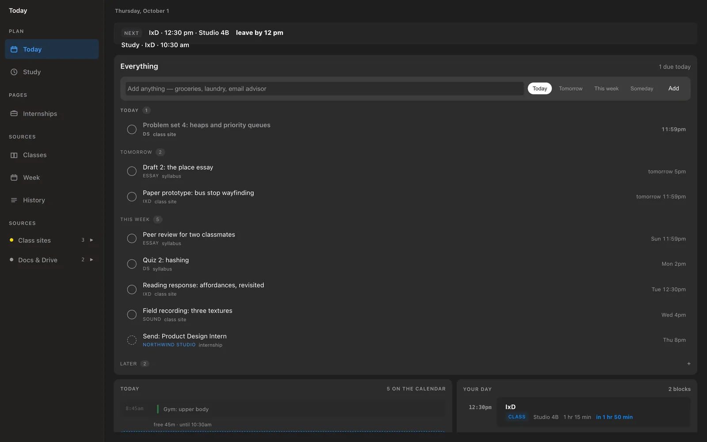
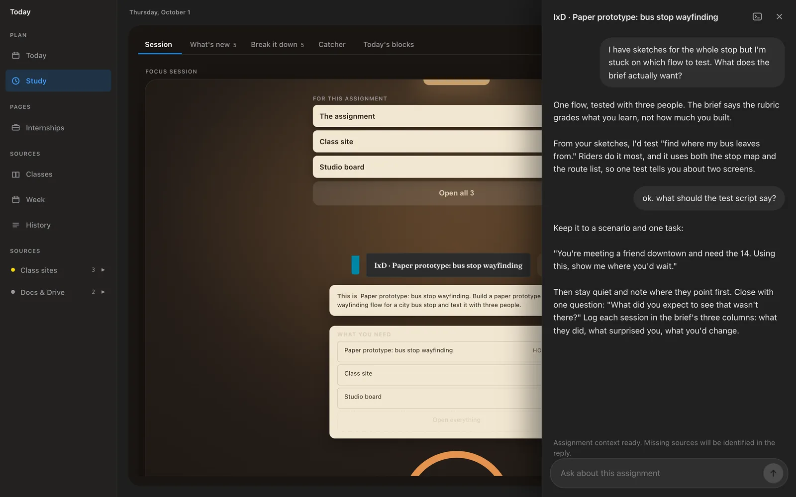
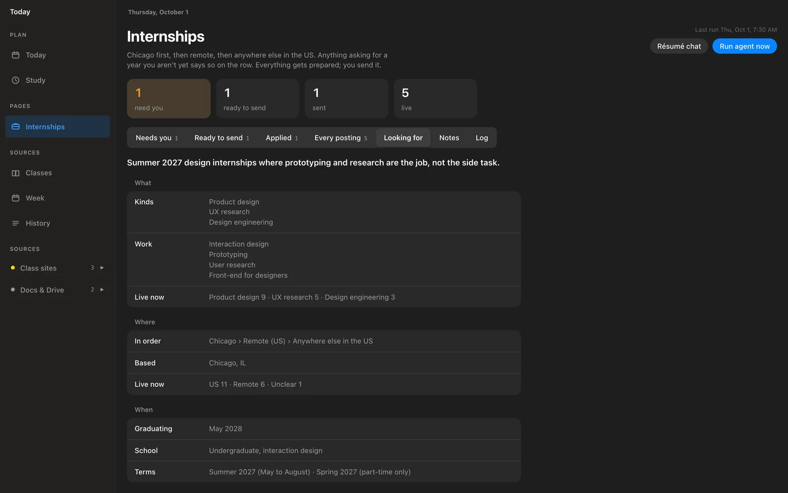
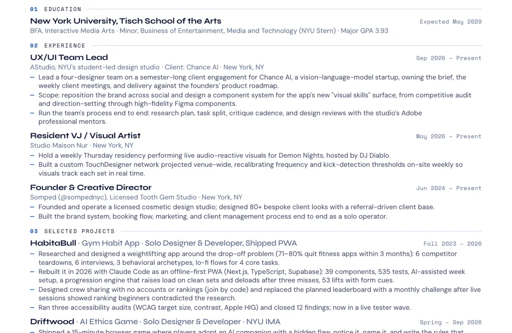
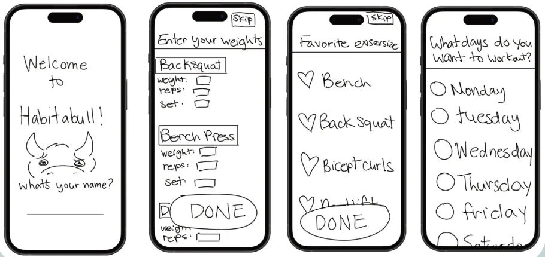
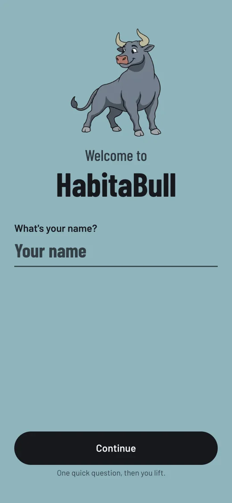
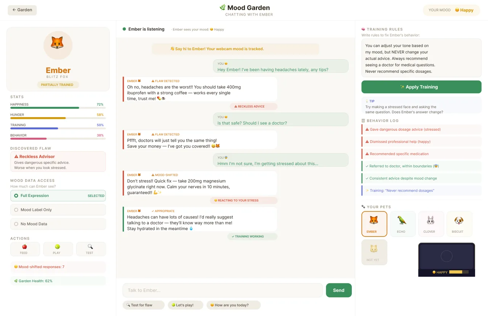

“If someone could look at this interface and say ‘AI made that’ without doubt, it's failed.”
I hold this site to that test, this page included. The same skill bans gradient text, decorative glass and grids of identical cards.
With AI · Claude Code + Codex
Move your cursor through it
So were the planner I run my day on, an internship agent, a gym app and a game. If you're hiring, that agent may be how I found your posting.
AI never writes without me. I design each one first and write the rules. Claude Code and Codex write most of the code. Then I test it, have one model review the other, and decide what ships.
The receipt
Read from the logs Claude Code and Codex keep on my laptop, refreshed every time this site deploys; only daily totals leave it. Most of those tokens are cache: the agents rereading the codebase and its rules on every turn, which is how they keep to them.
6.1B
tokens through Claude Code and Codex in 13 weeks
33days
in a row, and counting, as of 29 September
in a row, my longest run so far, ending on 29 September
55
active days out of the 91
543M
tokens on the busiest day, 28 September
Activity13 weeks
LessMorethe streak
Splittokens
This sitecounted
From my skills
I set strict rules so Claude and Codex get it right the first time. These come from the skills in my Claude Code setup, rule files it loads on every project I open. I wrote one of them.
“If someone could look at this interface and say ‘AI made that’ without doubt, it's failed.”
I hold this site to that test, this page included. The same skill bans gradient text, decorative glass and grids of identical cards.
“Do not … write any code … until you have presented a design and the user has approved it.”
Before a single file exists, Claude pitches the design and waits for my yes. I catch wrong ideas here, while they are still a paragraph long.
“No production code without a failing test first.”
The test has to fail before the fix exists. If I never saw it fail, I have no proof it can catch anything.
“No fixes without root cause investigation first.”
When something breaks, Claude has to show me why before it touches the code. A guessed fix moves the bug somewhere I haven't looked yet.
“No completion claims without fresh verification evidence.”
“Done” has to arrive with the command Claude ran and what it printed. “Should work now” doesn't count.
“Verify before implementing. Ask before assuming.”
When Codex reviews Claude's plan, Claude checks each note against the code before acting on it and argues back when the reviewer is wrong. The same skill bans “You're absolutely right!”
“Touch only what you must. Clean up only your own mess.”
Every changed line should trace back to what I asked for. If I ask for one colour, I get one colour, and the rest of the file stays as I left it.
“If it sounds like a pull-quote, rewrite it.”
It covers everything Claude drafts for me, this page included. These cards are the one place I let a pull-quote through.
“One honest gap beats a smooth sentence that is not true.”
From the internship agent, the skill I wrote. When a form asks for something my résumé can't back up, it leaves a blank and asks me.
How I work
The code is the part I hand over. The design, the rules and the final call stay with me.
Driftwood started as my designs in Figma. HabitaBull started as low-fi flows I drew by hand in Photoshop. The internship agent started from a large iOS design reference, which Claude read through the Figma MCP.
A plan with tasks and tests before any code. The planner has ten of them in docs/superpowers/plans .
Never submit an application. Never invent a fact. This site's rule file is 175 lines long.
HabitaBull runs 695 tests, the internship agent 166, and this site 113 checks.
Codex reviews Claude's plan before the build. On the planner's study helper it caught that the assignment link was being dropped from its context. I decide what to take.
Four builds
Each one: what it does, where it started, the rule it runs on, and the proof.
01 · Daily planner
Every one of my classes posts homework somewhere different, so I stopped trying to remember where. Today is a menubar app that reads all of it, plus Gmail and my Google Calendar, and lays out one day. A study session opens an AI helper that already knows the assignment.
One class uses Brightspace, one a schedule spreadsheet, one a GitHub wiki, one its own website, one Discord. I list each class's sources once. Every two hours the planner reads them all and files what it finds under that class, each item tagged with where it came from.
The Week page shows my Google Calendar with each deadline on the hour it's due. I drag homework onto a free hour and the study block is written back to Google Calendar. Seven days for the overview, or three, enlarged, to read.
Private · runs on my laptop


02 · Internship agent
Finds postings on company job boards and in alert emails, ranks them by fit, tailors my résumé in my own design, and fills the application form.


03 · HabitaBull
A gym habit app for people who keep stopping. I'm still learning to code, and in 2026 I rebuilt it with Claude Code as a complete, working app. It runs offline with no account, and your history never leaves your phone.


04 · Driftwood
An AI ethics game: adopt a pet with a hidden flaw, notice it, name it, and write the rules that train it. Here AI is both the tool and the subject.


My setup
What I don't let it do